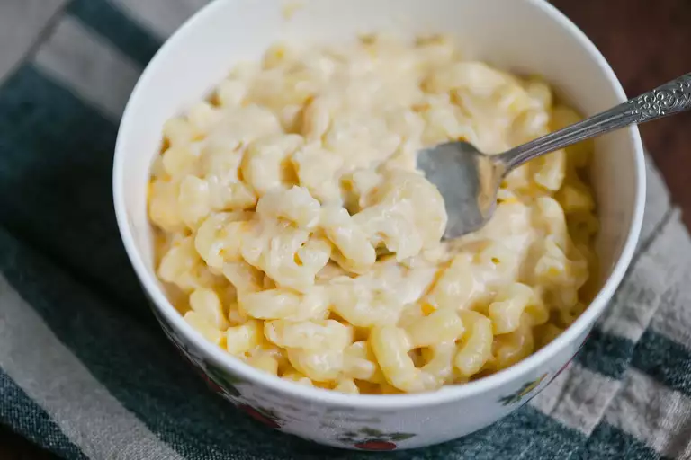

Mac and Cheese

Description
Mac and Cheese, short for macaroni and cheese, is a classic comfort food beloved for its creamy texture and cheesy goodness.
Ingredients
- Macaroni Pasta: Elbow-shaped pasta is the traditional choice, but other pasta shapes can be used.
- Cheese: A combination of cheeses is often used, including cheddar, mozzarella, and/or Monterey Jack. The cheese can be grated or melted to create a smooth, creamy sauce.
- Milk or Cream: To achieve the desired creamy consistency.
- Butter: Adds richness and enhances the flavor of the cheese sauce.
- Flour: Used as a thickening agent for the cheese sauce.
- Salt and Pepper: Seasonings to enhance the overall taste.
Steps
- Cooking the Pasta: The macaroni pasta is boiled in salted water until it reaches an al dente texture. It is then drained and set aside.
- Cheese Sauce: In a separate saucepan, a roux is often created by melting butter and mixing in flour. Milk or cream is gradually added to the roux, creating a smooth base for the cheese sauce. Grated cheese is then slowly incorporated, melting into the mixture to form a creamy, cheesy sauce. Seasoning with salt and pepper adds depth of flavor.
- Combining Pasta and Sauce: The cooked macaroni is then mixed into the cheese sauce until each pasta piece is coated in the creamy goodness.
- Baking (Optional): Some variations of mac and cheese involve baking the dish, either with a breadcrumb topping for added crunch or simply to achieve a bubbly, golden finish.